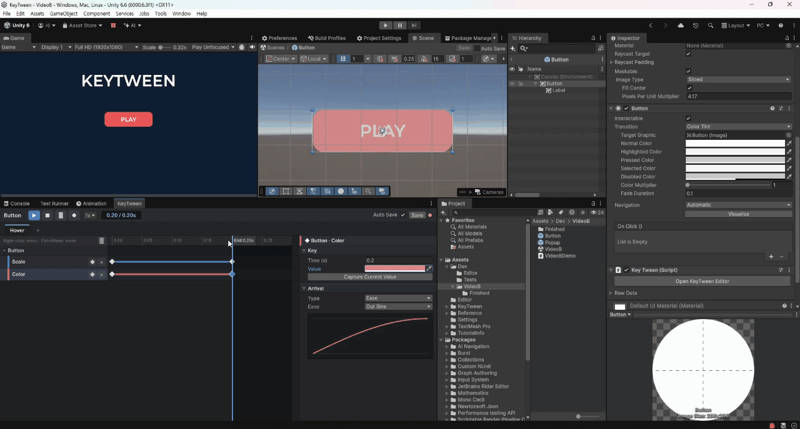
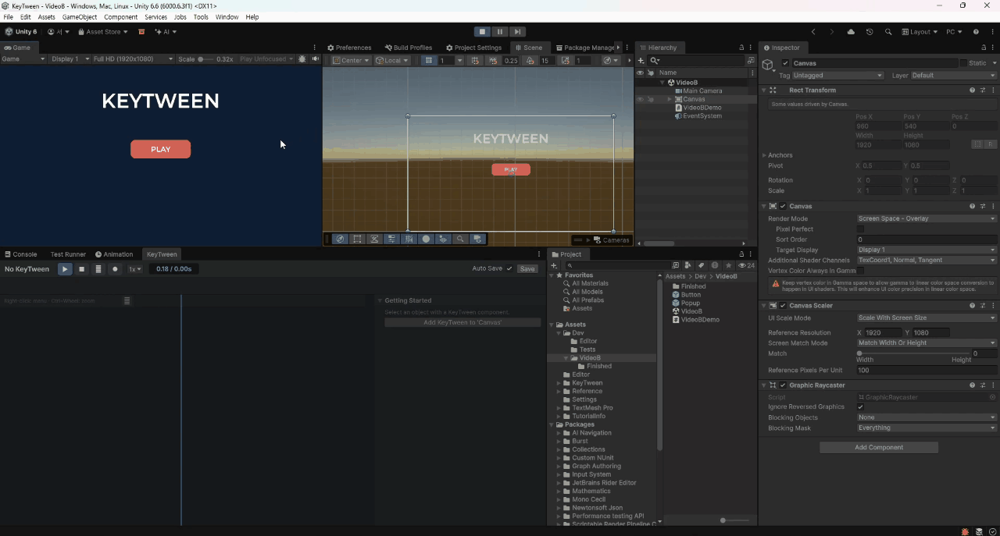

미리보기
미리보기로 상태가 어떻게 움직이는지 에디터에서 바로 확인합니다. 미리보기는 런타임과 같은 계산을 쓰므로 실제 재생과 결과가 같으며, 자식 호출과 오버라이드도 반영됩니다.
미리보기 재생하기
- 상태 탭에서 미리볼 상태를 고릅니다.
- 상단 바의 ▶ 버튼을 누릅니다.
특정 시간의 모습을 보려면 눈금자를 끌어 스크럽합니다. 다음은 Play 모드에 들어가지 않고 에디터에서 미리보는 모습입니다.

반복, 속도, 사운드
- 반복: ⟲ 버튼을 켜거나 상태의 Loop를 켜면 반복합니다.
- 속도: 0.1x~1x 중에서 고릅니다.
- 사운드: 재생하는 동안 지나간 사운드를 들려줍니다. 스크럽할 때는 소리가 나지 않습니다.
미리보는 곳에 따른 동작
| 어디서 | 동작 |
|---|---|
| 씬 (편집 모드) | 바뀌는 속성을 Unity AnimationMode에 맡깁니다 |
| Prefab 모드 | 시작할 때의 값을 기억해 두었다가 멈추면 되돌립니다 |
| Project 창에서 고른 Prefab | 그 Prefab을 Prefab 모드로 열고 같은 상태를 미리봅니다 |
| Play 모드 | 실행 중인 오브젝트에 값을 바로 쓰고, 멈추면 되돌립니다 |
- 씬에서는
AnimationMode덕분에 멈추면 원래 값으로 돌아가고, 씬에 저장되지 않습니다. - Prefab 모드에서 Prefab이 저장될 때(Ctrl+S, Unity Prefab 모드의 자동 저장)는 원래 값을 넣어 저장합니다. 그 뒤 같은 시간의 모습을 다시 보여 줍니다.
- Prefab 원본은 어느 화면에도 그려지지 않습니다. 그래서 Project 창에서 고른 Prefab을 재생하거나 스크럽하면 Prefab 모드로 엽니다.
Play 모드에서도 같은 창으로 미리볼 수 있습니다.

시작 모습 자동 결정
어떤 상태는 다른 상태가 끝난 모습에서 시작해야 움직임이 보입니다. 이런 상태는 그 모습에서 시작해 미리봅니다. 짝은 다음과 같습니다.
- Play On 짝: PointerExit←PointerEnter, PointerUp←PointerDown, Deselect←Select, ToggleOff←ToggleOn
- 이름 짝: Open↔Close, Show↔Hide, In↔Out
미리보기가 멈추는 때
다음 경우에 미리보기가 멈춥니다.
- ■ 버튼을 누를 때
- 대상이나 상태 탭을 바꿀 때
- 상태를 삭제할 때
- Play 모드에 들어가거나 나올 때
- 스크립트를 다시 불러올 때
- 씬을 저장하거나 닫을 때
- 창을 닫을 때